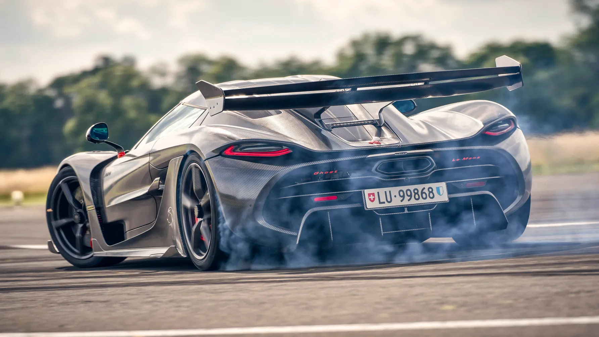
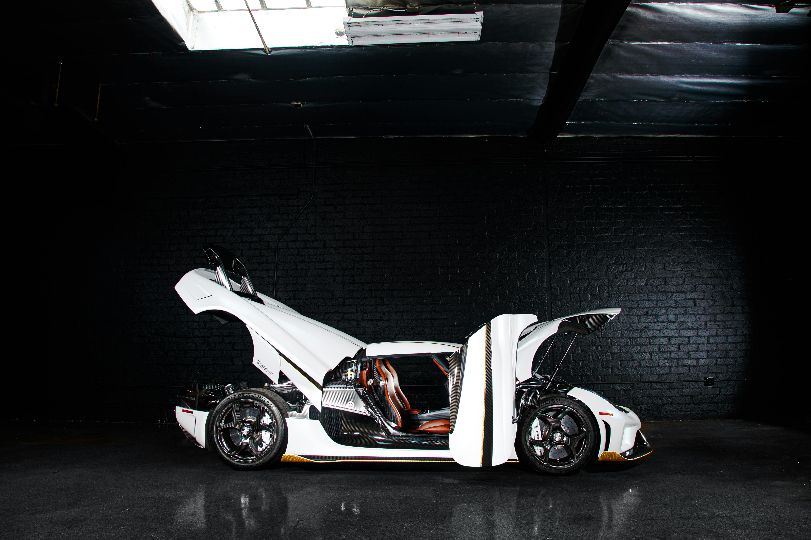
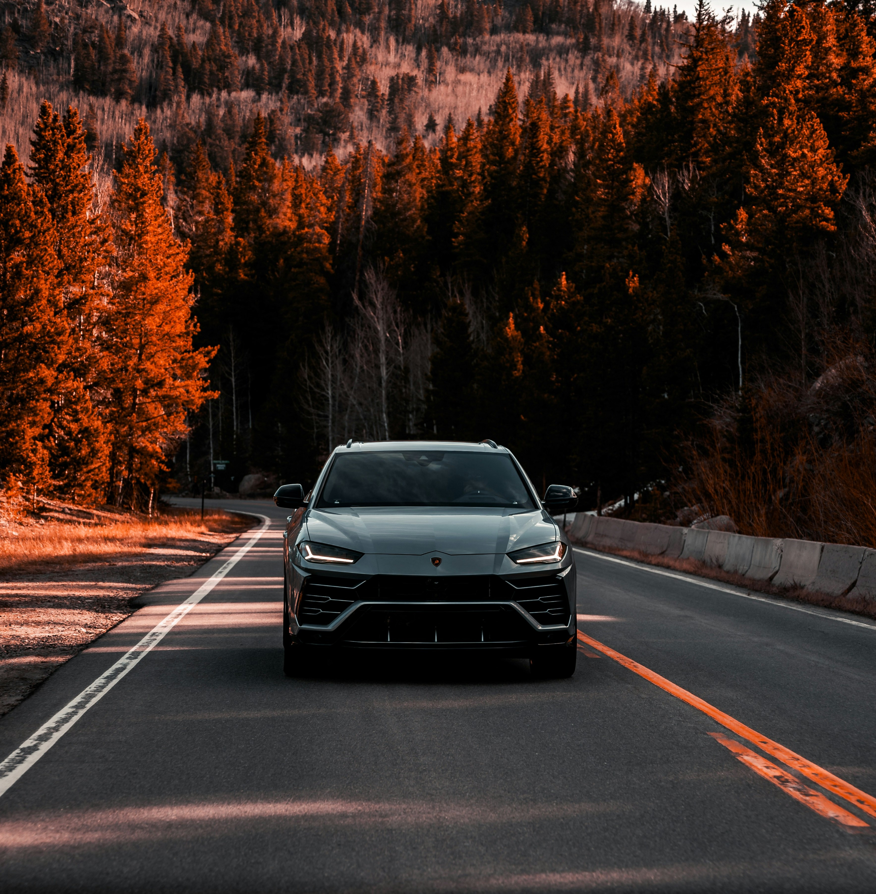
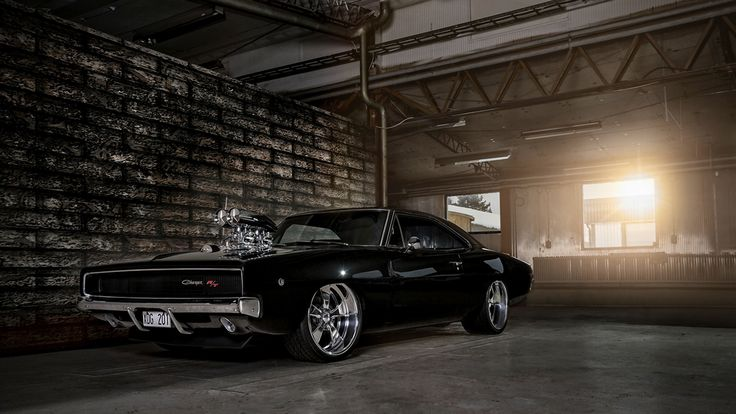

The Jesko is built for both track domination and record-breaking top speed.
Its aerodynamics, transmission, and power output make it one of the most advanced
hypercars in the world.


Jesko 0–400–0 km/h World Record
Precision engineering at its finest
A hypercar built for record-breaking speed
Nissan GTR R35
The R35 GTR is famous for its brutal acceleration, precise all-wheel drive, and
incredible value. It’s one of the most loved modern JDM legends.
GTR Acceleration Test
GTR on Track
JDM legend on the move
Lamborghini Urus
The Lamborghini Urus blends speed, power, luxury, and everyday comfort.
It's one of the most successful models ever produced by Lamborghini.

Luxury and performance in one SUV
The world's fastest super-SUV
Urus Review
1970 Dodge Charger
A legendary muscle car with raw power and timeless design.
The 1970 Charger remains one of the most desired classics in the world.

Classic Charger Showcase
Classic American muscle at its peak
Original Owner Charger R/T
If you want to know more about these cars click the links below


 Koenigsegg Jesko Review
Koenigsegg Jesko Review